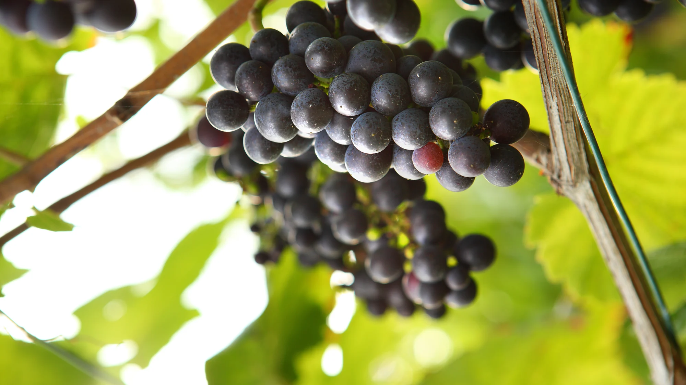
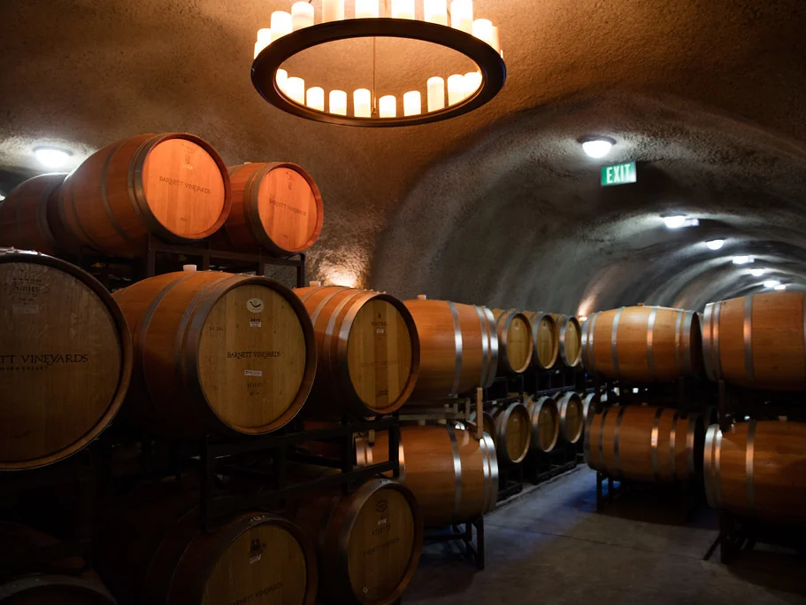
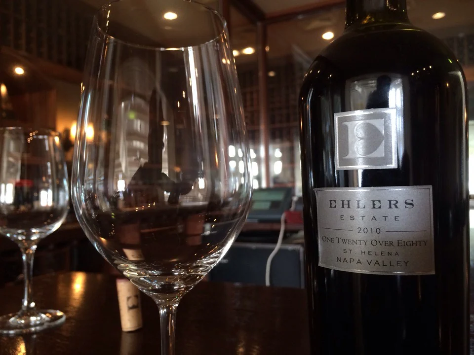
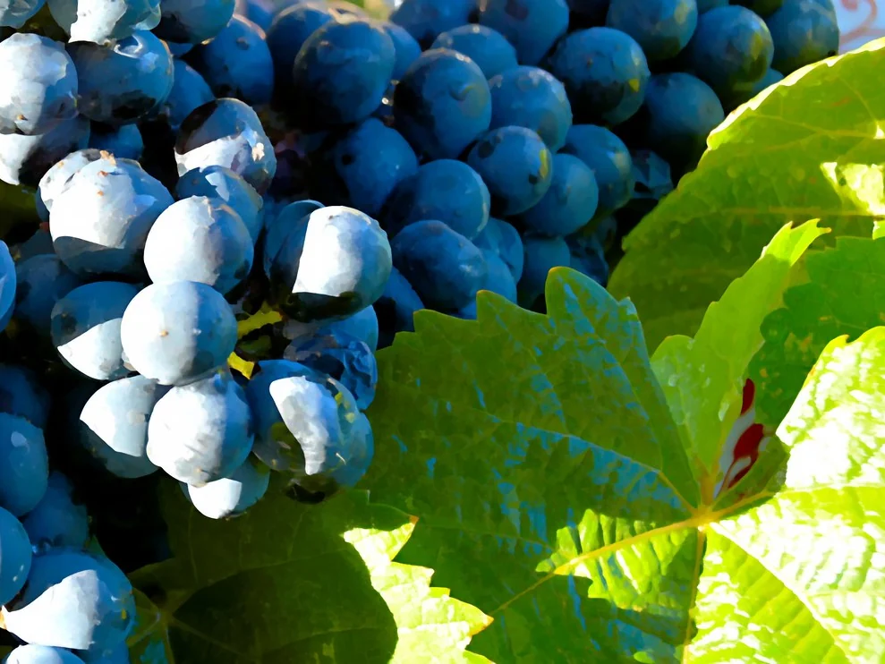

Illustrationsfotos — sie zeigen nicht Maison Viticole Roeder. Schicken Sie mir Ihre eigenen Fotos, dann ersetze ich sie.
Das Bistro
Das Weingut
Die Maison Viticole Roeder ist ein kleines Bio-Weingut in Steinheim, auf dem Terroir der Hoelt bei Rosport. Luc Roeder begann 2009 mit der Wiederherstellung seiner ersten Reben und bewirtschaftet Terrassen mit Trockenmauern, bei vollständig manueller Lese. Das Weingut erzeugt unter anderem einen Elbling von alten Reben, Pinot, Chardonnay und den Crémant Cuvée Kimmfrächen.

Impressionen
In Bildern


Kontakt
So finden Sie uns
- Anrufen
- +352 691 628 731
- luc.roeder@biowenzer.lu
- Adresse
- 27, rue de la Montagne, L-6586 Steinheim, Rosport-Mompach